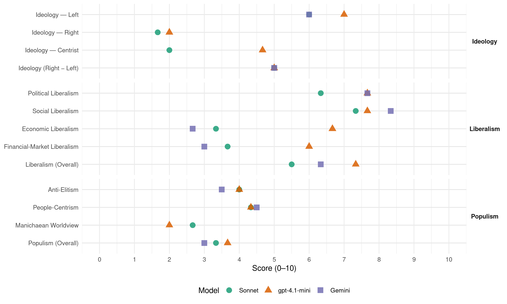

BNG (Spain, 2008)
manifesto_id 33908_200803
Get full text: This site shows derived annotations and short verbatim quotes only. The full manifesto text is © Manifesto Project / WZB — obtain it via manifesto-project.wzb.eu using the manifesto_id above.
Headline scores
| Dimension | Sonnet | gpt-4.1-mini | Gemini |
|---|---|---|---|
| Populism (Overall) | 3.3 | 3.7 | 3.0 |
| Anti-Elitism | 4.0 | 4.0 | 3.5 |
| People-Centrism | 4.3 | 4.3 | 4.5 |
| Manichaean Worldview | 2.7 | 2.0 | – |
| Ideology (Right − Left) | 5.0 | 5.0 | 5.0 |
| Liberalism (Overall) | 5.5 | 7.3 | 6.3 |
| Political Liberalism | 6.3 | 7.7 | 7.7 |
| Social Liberalism | 7.3 | 7.7 | 8.3 |
| Economic Liberalism | 3.3 | 6.7 | 2.7 |
| Financial-Market Liberalism | 3.7 | 6.0 | 3.0 |
Evidence per dimension
Economic Liberalism
Gemini · score 3.0 · verified · chunk 1
“impedir calquera tentativa de carácter centralista que impida ou limite o desenvolvemento dos sectores produtivos”
O BNG usará a súa forza en Madrid para impedir calquera tentativa de carácter centralista que impida ou limite o desenvolvemento dos sectores produtivos galegos
Gemini · score 3.0 · verified · chunk 2
“excesiva confianza nun mercado inmobiliario desregulado”
As receitas do Goberno do Estado para reducir o custo da vivenda causaron o efeito contrario, e a excesiva confianza nun mercado inmobiliario desregulado provocou un maior esforzo por parte de moitos cidadáns
Gemini · score 2.0 · verified · chunk 3
“evitar de que sexa unicamente o mercado”
O apoio de todas aquelas medidas que afecten á planificación económica do Estado favorecedoras do intereses xerais da sociedade, co fin de evitar de que sexa unicamente o mercado o que regule as diversas actividades socioeconómicas existentes.
gpt-4.1-mini · score 7.0 · verified · chunk 1
“defensa do dereito de Galiza a producir e a un desenvolvemento autocentrado”
Foi unha constante do BNG a permanente defensa do dereito de Galiza a producir, tal e como quedou plasmado na pasada lexislatura…
gpt-4.1-mini · score 7.0 · verified · chunk 2
“política industrial e dun desenvolvemento empresarial activos”
O BNG acometerá a defensa dos sectores produtivos galegos nas Cortes Xerais do Estado a través da proposta dunha política industrial e dun desenvolvemento empresarial activos que lle permitan superar os retos da globalización da economía e combinar adecuadamente medidas horizontais e de caracter sectorial.
gpt-4.1-mini · score 6.0 · verified · chunk 3
“impulsar unha política comercial propia, canalizada actualmente a través da presenza na Consellaría de Innovación e Industria”
O BNG posúe, por tanto, unha política comercial propia, canalizada actualmente a través da presenza na Consellaría de Innovación e Industria no Goberno da Xunta de Galiza.
Sonnet · score 4.0 · verified · chunk 1
“política industrial activa”
Levaremos a cabo estes obxectivos a través da proposta dunha política industrial activa, sen permitirmos inxerencias estatais nos ámbitos de competencia exclusiva da nosa nación.
Sonnet · score 3.0 · verified · chunk 2
“mercado inmobiliario desregulado provocou”
a excesiva confianza nun mercado inmobiliario desregulado provocou un maior esforzo por parte
Sonnet · score 3.0 · verified · chunk 3
“evitar de que sexa unicamente o mercado o que regule”
co fin de evitar de que sexa unicamente o mercado o que regule as diversas actividades socioeconómicas existentes
Financial-Market Liberalism
Gemini · score 3.0 · verified · chunk 3
“garantías adicionais que estabelecen as institucións financeiras”
A redución da base impoñíbel do Imposto de Actos Xurídicos Documentados, de xeito que só se integre o importe real da hipoteca e non as garantías adicionais que estabelecen as institucións financeiras para os supostos de impago.
gpt-4.1-mini · score 6.0 · verified · chunk 1
“recoñecemento da soberanía financeira”
O Estatuto establecerá as bases dun sistema de financiamento que asegure a suficiencia e a autonomía financeira da Facenda galega, a partir de recursos tributarios propios e da recadación territorializada dos impostos estatais.
Sonnet · score 4.0 · verified · chunk 1
“Garantir a estabilidade do Fondo de Reserva”
Garantir a estabilidade do Fondo de Reserva, fomentar o investimento do fondo en débeda pública autonómica e local e rexeitar calquera intento de este fondo ser investido en valores de renda variábel.
Sonnet · score 4.0 · verified · chunk 2
“mobilidade dos capitais”
ao favoreceren a interpenetración dos mercados, a mobilidade dos capitais, as grandes fusións empresariais
Sonnet · score 3.0 · verified · chunk 3
“redución da base impoñíbel do Imposto de Actos Xurídicos Documentados”
A redución da base impoñíbel do Imposto de Actos Xurídicos Documentados, de xeito que só se integre o importe real da hipoteca e non as garantías adicionais que estabelecen as institucións financeiras
Political Liberalism
Gemini · score 8.0 · verified · chunk 1
“freando calquera proceso de involución democrática”
acorde coa realidade plurinacional do Estado, freando calquera proceso de involución democrática, de recentralización ou de
Gemini · score 8.0 · verified · chunk 2
“respectuoso co sistema de garantías democráticas”
O BNG defenderá un modelo de dereito penal resocializador, que persiga a redución das taxas de criminalidade e a seguranza das persoas, e que sexa respectuoso co sistema de garantías democráticas e as conquistas do Estado social.
Gemini · score 7.0 · verified · chunk 3
“defensa da democracia e da igualdade”
O BNG caracterízase pola defensa da democracia e da igualdade nas relacións internacionais, da eliminación da pobreza e da promoción dun desenvolvemento solidario
gpt-4.1-mini · score 8.0 · verified · chunk 1
“defensa das cuestións que atinxen a Galiza nas Cortes Xerais”
O BNG protagonizou en exclusiva a defensa das cuestións que atinxen a Galiza nas Cortes Xerais, impulsando e premendo para que distintos colectivos de traballadores e traballadoras…
gpt-4.1-mini · score 8.0 · verified · chunk 2
“Lei de igualdade e a Lei contra a violencia de xénero”
A posta en marcha dun novo marco lexislativo coa promulgación de leis de carácter estatal, como a Lei de igualdade e a Lei contra a violencia de xénero, supoñen un avance ao que o BNG contribuíu a través de propostas que axudaron a mellorar estes textos lexislativos.
gpt-4.1-mini · score 7.0 · verified · chunk 3
“defensa da democracia e da igualdade nas relacións internacionais”
O BNG caracterízase pola defensa da democracia e da igualdade nas relacións internacionais, da eliminación da pobreza e da promoción dun desenvolvemento solidario e máis equitativo, da paz e da seguridade mundial e do dereito dos pobos a decidiren libremente o seu futuro.
Sonnet · score 7.0 · verified · chunk 1
“freando calquera proceso de involución democrática”
Avanzar no deseño dun novo marco institucional máis acorde coa realidade plurinacional do Estado, freando calquera proceso de involución democrática, de recentralización ou de invasións de competencias.
Sonnet · score 6.0 · verified · chunk 2
“sistema de garantías democráticas”
que sexa respectuoso co sistema de garantías democráticas e as conquistas do Estado social
Sonnet · score 6.0 · verified · chunk 3
“defensa da democracia e da igualdade nas relacións internacionais”
O BNG caracterízase pola defensa da democracia e da igualdade nas relacións internacionais, da eliminación da pobreza e da promoción dun desenvolvemento solidario e máis equitativo
Liberalism (Overall)
Gemini · score 7.0 · verified · chunk 1
“garantir a igualdade legal de todas as relacións afectivas”
desde a súa chegada ás Cortes Xerais, o BNG ten defendido iniciativas no Estado para garantir a igualdade legal de todas as relacións afectivas.
Gemini · score 7.0 · verified · chunk 2
“respectuoso co sistema de garantías democráticas”
O BNG defenderá un modelo de dereito penal resocializador, que persiga a redución das taxas de criminalidade e a seguranza das persoas, e que sexa respectuoso co sistema de garantías democráticas e as conquistas do Estado social.
Gemini · score 5.0 · verified · chunk 3
“defensa da democracia e da igualdade”
O BNG caracterízase pola defensa da democracia e da igualdade nas relacións internacionais, da eliminación da pobreza e da promoción dun desenvolvemento solidario
gpt-4.1-mini · score 7.0 · verified · chunk 1
“defensa das cuestións que atinxen a Galiza nas Cortes Xerais”
O BNG protagonizou en exclusiva a defensa das cuestións que atinxen a Galiza nas Cortes Xerais, impulsando e premendo para que distintos colectivos de traballadores e traballadoras…
gpt-4.1-mini · score 8.0 · verified · chunk 2
“Lei de igualdade e a Lei contra a violencia de xénero”
A posta en marcha dun novo marco lexislativo coa promulgación de leis de carácter estatal, como a Lei de igualdade e a Lei contra a violencia de xénero, supoñen un avance ao que o BNG contribuíu a través de propostas que axudaron a mellorar estes textos lexislativos.
gpt-4.1-mini · score 7.0 · verified · chunk 3
“defensa da democracia e da igualdade nas relacións internacionais”
O BNG caracterízase pola defensa da democracia e da igualdade nas relacións internacionais, da eliminación da pobreza e da promoción dun desenvolvemento solidario e máis equitativo, da paz e da seguridade mundial e do dereito dos pobos a decidiren libremente o seu futuro.
Sonnet · score 6.0 · verified · chunk 1
“freando calquera proceso de involución democrática”
Avanzar no deseño dun novo marco institucional máis acorde coa realidade plurinacional do Estado, freando calquera proceso de involución democrática, de recentralización ou de invasións de competencias.
Sonnet · score 5.0 · verified · chunk 2
“sistema de garantías democráticas”
que sexa respectuoso co sistema de garantías democráticas e as conquistas do Estado social
Sonnet · score 5.0 · mixed · chunk 3
“defensa da democracia e da igualdade”
O BNG caracterízase pola defensa da democracia e da igualdade nas relacións internacionais, da eliminación da pobreza e da promoción dun desenvolvemento solidario
Anti-Elitism
Gemini · score 4.0 · verified · chunk 2
“especulación en beneficio dos oligopolios inmobiliarios”
un mercado inmobiliario desregulado provocou un maior esforzo por parte de moitos cidadáns e de numerosas cidadás para poderen ter unha vivenda, ao tempo que se favoreceu a especulación en beneficio dos oligopolios inmobiliarios.
Gemini · score 3.0 · verified · chunk 3
“reformas que afectan á práctica totalidade”
contrarreforma fiscal que tivo como obxectivo principal a redución da carga fiscal soportada polas grandes empresas e as persoas con maiores niveis de renda, ao tempo que se trasladou esa carga fiscal para os/as traballadores/as, as pequenas empresas e os autónomos
gpt-4.1-mini · score 6.0 · verified · chunk 1
“unha política internacional baseada no respecto entre os pobos e a paz”
BNG usará a súa capacidade decisoria dun xeito construtivo e positivo e porá en primeiro plano a defensa e os intereses galegos, mais sen esquecer o firme compromiso con políticas de carácter social, a prol das maiorías sociais e das clases populares, así como o aliñamento cunha política internacional baseada no respecto entre os pobos e a paz.
gpt-4.1-mini · score 3.0 · verified · chunk 2
“políticas públicas que non sexan acordes cos nosos intereses”
impedirmos que desde o Estado se promovan políticas públicas que non sexan acordes cos nosos intereses, froito de que esas políticas se deseñan tendo en conta realidades distintas.
gpt-4.1-mini · score 3.0 · verified · chunk 3
“estratexia de desmantelamento das funcións redistributivas do sistema fiscal”
Baixo as campañas propagandísticas de rebaixa de impostos, agóchase unha estratexia de desmantelamento das funcións redistributivas do sistema fiscal e de traslado das obrigas fiscais das rendas máis altas para o conxunto da sociedade.
Sonnet · score 3.0 · verified · chunk 1
“só foran elixidos deputados e deputadas de partidos de ámbito estatal”
Ao longo de case 20 anos o Congreso e o Senado viviron e actuaron de costas a Galiza, por mor do silencio de quen debera representala. Neste sentido, se analizarmos e avaliarmos os debates e as iniciativas parlamentares do período 1996-2008 a respecto de Galiza e se os contrastarmos cos que se desenvolveron entre 1977-1996 demóstrase de forma contundente que o BNG é a única garantía da existencia do noso país, dos seus problemas e das súas reivindicacións na política estatal. Desde o ano 1996, en que o BNG accedeu ás Cortes do Estado, Galiza tivo voz propia en Madrid.
Sonnet · score 4.0 · verified · chunk 2
“oligopolios inmobiliarios”
a especulación en beneficio dos oligopolios inmobiliarios. Mais, na actualidade, no noso país
Sonnet · score 5.0 · verified · chunk 3
“gobernos do Partido Popular puxeron en marcha unha estratexia de contrarreforma fiscal”
Os gobernos do Partido Popular puxeron en marcha unha estratexia de contrarreforma fiscal que tivo como obxectivo principal a redución da carga fiscal soportada polas grandes empresas e as persoas con maiores niveis de renda
Ideology — Centrist
gpt-4.1-mini · score 6.0 · verified · chunk 1
“unha forza política galega propia como o BNG, sen ningún tipo de obediencia estatal”
A experiencia demóstranos que, para tal fin, só unha forza política galega propia como o BNG, sen ningún tipo de obediencia estatal, é quen de garantir que Galiza forme parte da primeira liña do debate político do Estado e de influír de xeito determinante nas políticas estatais en favor dos intereses e das necesidades do país.
gpt-4.1-mini · score 5.0 · verified · chunk 2
“corresponsabilidade da Administración xeral do Estado”
A construción do Sistema Galego de Benestar implica unha corresponsabilidade da Administración xeral do Estado para avanzar no seu desenvolvemento e na súa consolidación.
gpt-4.1-mini · score 3.0 · verified · chunk 3
“defender o dereito dos pobos a se autogobernaren”
O dereito dos pobos a se autogobernaren e a seren donos das súas riquezas. O dereito á igualdade de trato e de relación entre as nacións.
Sonnet · score 2.0 · verified · chunk 1
“sen ningún tipo de obediencia estatal”
só unha forza política galega propia como o BNG, sen ningún tipo de obediencia estatal, é quen de garantir que Galiza forme parte da primeira liña do debate político do Estado
Sonnet · score 2.0 · verified · chunk 2
“alternativa política avanzada socialmente”
O BNG defende unha alternativa política avanzada socialmente, que sexa vangarda na extensión
Sonnet · score 2.0 · verified · chunk 3
“defensa da democracia e da igualdade nas relacións internacionais”
O BNG caracterízase pola defensa da democracia e da igualdade nas relacións internacionais, da eliminación da pobreza e da promoción dun desenvolvemento solidario
Ideology — Left
Gemini · score 6.0 · verified · chunk 1
“políticas sociais e económicas en favor das maiorías sociais”
Tributaria Galega para a xestión de todos os tributos recadados en Galiza. Articular políticas sociais e económicas en favor das maiorías sociais e das clases populares
Gemini · score 5.0 · verified · chunk 2
“especulación en beneficio dos oligopolios inmobiliarios”
un mercado inmobiliario desregulado provocou un maior esforzo por parte de moitos cidadáns e de numerosas cidadás para poderen ter unha vivenda, ao tempo que se favoreceu a especulación en beneficio dos oligopolios inmobiliarios.
Gemini · score 7.0 · verified · chunk 3
“redución da carga fiscal soportada polas grandes empresas”
contrarreforma fiscal que tivo como obxectivo principal a redución da carga fiscal soportada polas grandes empresas e as persoas con maiores niveis de renda, ao tempo que se trasladou esa carga fiscal para os/as traballadores/as
gpt-4.1-mini · score 7.0 · verified · chunk 1
“políticas de carácter social, a prol das maiorías sociais e das clases populares”
BNG usará a súa capacidade decisoria dun xeito construtivo e positivo e porá en primeiro plano a defensa e os intereses galegos, mais sen esquecer o firme compromiso con políticas de carácter social, a prol das maiorías sociais e das clases populares, así como o aliñamento cunha política internacional baseada no respecto entre os pobos e a paz.
gpt-4.1-mini · score 7.0 · verified · chunk 2
“corrixir as situacións de inxustiza social e desigualdade”
Impulsaremos, por tanto, todas aquelas propostas que contribúan a pór fin e a corrixir as situacións de inxustiza social e desigualdade aínda existentes na nosa sociedade.
gpt-4.1-mini · score 7.0 · verified · chunk 3
“defenderemos o que o sistema tributario debe ter una función redistribuidora da renda”
O BNG entende que o debate sobre o sistema tributario do Estado ten que se facer baixo a garantía do mantemento dos principios de equidade e progresividade, por defendermos o que o sistema tributario debe ter una función redistribuidora da renda e da riqueza e asumir un papel activo na corrección de desigualdades.
Sonnet · score 6.0 · verified · chunk 1
“políticas redistributivas en prol da poboación de menor renda”
Así, defenderemos o incremento das pensións, o emprego digno e estábel e políticas redistributivas en prol da poboación de menor renda.
Sonnet · score 6.0 · verified · chunk 2
“Aumentar o gasto público en materia social”
Aumentar o gasto público en materia social para converxer con Europa tanto en porcentaxe
Sonnet · score 6.0 · verified · chunk 3
“función redistribuidora da renda e da riqueza”
o sistema tributario debe ter una función redistribuidora da renda e da riqueza e asumir un papel activo na corrección de desigualdades
Ideology (Right − Left)
Gemini · score 5.0 · verified · chunk 1
“políticas sociais e económicas en favor das maiorías sociais”
Tributaria Galega para a xestión de todos os tributos recadados en Galiza. Articular políticas sociais e económicas en favor das maiorías sociais e das clases populares
Gemini · score 4.0 · verified · chunk 2
“especulación en beneficio dos oligopolios inmobiliarios”
un mercado inmobiliario desregulado provocou un maior esforzo por parte de moitos cidadáns e de numerosas cidadás para poderen ter unha vivenda, ao tempo que se favoreceu a especulación en beneficio dos oligopolios inmobiliarios.
Gemini · score 6.0 · verified · chunk 3
“redución da carga fiscal soportada polas grandes empresas”
contrarreforma fiscal que tivo como obxectivo principal a redución da carga fiscal soportada polas grandes empresas e as persoas con maiores niveis de renda, ao tempo que se trasladou esa carga fiscal para os/as traballadores/as
gpt-4.1-mini · score 6.0 · verified · chunk 1
“unha forza política galega propia como o BNG, sen ningún tipo de obediencia estatal”
A experiencia demóstranos que, para tal fin, só unha forza política galega propia como o BNG, sen ningún tipo de obediencia estatal, é quen de garantir que Galiza forme parte da primeira liña do debate político do Estado e de influír de xeito determinante nas políticas estatais en favor dos intereses e das necesidades do país.
gpt-4.1-mini · score 5.0 · verified · chunk 2
“políticas públicas que non sexan acordes cos nosos intereses”
impedirmos que desde o Estado se promovan políticas públicas que non sexan acordes cos nosos intereses, froito de que esas políticas se deseñan tendo en conta realidades distintas.
gpt-4.1-mini · score 4.0 · verified · chunk 3
“defenderemos o que o sistema tributario debe ter una función redistribuidora da renda”
O BNG entende que o debate sobre o sistema tributario do Estado ten que se facer baixo a garantía do mantemento dos principios de equidade e progresividade, por defendermos o que o sistema tributario debe ter una función redistribuidora da renda e da riqueza e asumir un papel activo na corrección de desigualdades.
Sonnet · score 5.0 · verified · chunk 1
“políticas redistributivas en prol da poboación de menor renda”
Así, defenderemos o incremento das pensións, o emprego digno e estábel e políticas redistributivas en prol da poboación de menor renda.
Sonnet · score 5.0 · verified · chunk 2
“Aumentar o gasto público en materia social”
Aumentar o gasto público en materia social para converxer con Europa tanto en porcentaxe
Sonnet · score 5.0 · verified · chunk 3
“función redistribuidora da renda e da riqueza”
o sistema tributario debe ter una función redistribuidora da renda e da riqueza e asumir un papel activo na corrección de desigualdades
Ideology — Right
gpt-4.1-mini · score 3.0 · verified · chunk 1
“defender a libre determinación dos pobos”
…o Estado español se aliñe coa paz, coa convivencia entre nacións, desde a defensa da libre determinación dos pobos, co seu dereito a controlaren as súas riquezas, nun marco de legalidade baseado na igualdade e na xustiza e non na actuación unilateral, prepotente e agresiva dunha gran potencia.
gpt-4.1-mini · score 2.0 · verified · chunk 2
“revisión da lei de estranxeiría para incorporar as garantías de asilo das mulleres”
Modificar a lei de estranxeiría para incorporar as garantías de asilo das mulleres que sofren violencia de xénero no país de orixe ou no de residencia.
gpt-4.1-mini · score 1.0 · verified · chunk 3
“opómonos á guerra imperialista e á aplicación duns deseños de control do mundo”
O nacionalismo galego rexeita firmemente o pretexto falaz das liberdades democráticas e dos dereitos humanos para xustificar atrocidades como a guerra e a ocupación do Iraq… opómonos á guerra imperialista e á aplicación duns deseños de control do mundo a través da ocupación de zonas de grande importancia xeoestratéxica e enerxética.
Sonnet · score 1.0 · verified · chunk 1
“dereito dos pobos a decidiren libremente o seu futuro”
O BNG sempre se caracterizou pola defensa da democracia e da igualdade nas relacións internacionais, da eliminación da pobreza e da promoción dun desenvolvemento solidario e máis equitativo, da paz, do antiimperialismo e do dereito dos pobos a decidiren libremente o seu futuro.
Sonnet · score 2.0 · verified · chunk 2
“menores estranxeiros non acompañados”
un plan de actuación en materia de menores estranxeiros non acompañados que pase polo financiamento
Sonnet · score 2.0 · verified · chunk 3
“control das importacións para evitar a competencia desleal”
control das importacións para evitar a competencia desleal, estabilidade de prezos, renovación da flota etc.
Manichaean Worldview
gpt-4.1-mini · score 5.0 · mixed · chunk 1
“a actuación unilateral, prepotente e agresiva dunha gran potencia”
…co seu dereito a controlaren as súas riquezas, nun marco de legalidade baseado na igualdade e na xustiza e non na actuación unilateral, prepotente e agresiva dunha gran potencia.
gpt-4.1-mini · score 2.0 · verified · chunk 2
“situación de inxustiza social e desigualdade”
que contribúan a pór fin e a corrixir as situacións de inxustiza social e desigualdade aínda existentes na nosa sociedade. Nesta liña incluímos as seguintes medidas:
gpt-4.1-mini · score 2.0 · verified · chunk 3
“opómonos á guerra imperialista e á aplicación duns deseños de control do mundo”
O nacionalismo galego rexeita firmemente o pretexto falaz das liberdades democráticas e dos dereitos humanos para xustificar atrocidades como a guerra e a ocupación do Iraq… opómonos á guerra imperialista e á aplicación duns deseños de control do mundo a través da ocupación de zonas de grande importancia xeoestratéxica e enerxética.
Sonnet · score 2.0 · verified · chunk 1
“políticas contrarias aos seus intereses”
Fronte á idea da Galiza pobre, subvencionada por España e incapaz de se valer por si propia, a realidade amósanos que Galiza é un país que conta con enormes potencialidades, mais que foi empobrecido por moitos anos de políticas contrarias aos seus intereses, e que conta con recursos suficientes para sustentar servizos públicos universais de calidade e unha estratexia propia de progreso económico e social.
Sonnet · score 3.0 · verified · chunk 2
“débeda histórica coa Galiza”
continuar co pagamento da débeda histórica coa Galiza en materia de servizos sociais
Sonnet · score 3.0 · verified · chunk 3
“electoralismo e de camiñar cara a unha forte redución”
teñen o mínimo común denominador do seu electoralismo e de camiñar cara a unha forte redución da tributación directa, o que supón unha translación da carga fiscal cara á tributación indirecta
People-Centrism
Gemini · score 5.0 · verified · chunk 1
“a prol das maiorías sociais e das clases populares”
firme compromiso con políticas de carácter social, a prol das maiorías sociais e das clases populares, así como o aliñamento
Gemini · score 4.0 · verified · chunk 3
“intereses xerais da sociedade”
O apoio de todas aquelas medidas que afecten á planificación económica do Estado favorecedoras do intereses xerais da sociedade, co fin de evitar de que sexa unicamente o mercado o que regule as diversas actividades socioeconómicas existentes.
gpt-4.1-mini · score 7.0 · verified · chunk 1
“a expresión da vontade de Galiza de existir e defender os seus intereses”
En definitiva, o BNG continuou sendo a expresión da vontade de Galiza de existir e defender os seus intereses no Estado.
gpt-4.1-mini · score 4.0 · verified · chunk 2
“a cidadanía”
defende unha alternativa política avanzada socialmente, que sexa vangarda na extensión de dereitos á cidadanía. Impulsaremos, por tanto, todas aquelas propostas que contribúan a pór fin e a corrixir as situacións de inxustiza social e desigualdade aínda existentes na nosa sociedade.
gpt-4.1-mini · score 2.0 · verified · chunk 3
“defender o dereito dos pobos a se autogobernaren”
O dereito dos pobos a se autogobernaren e a seren donos das súas riquezas. O dereito á igualdade de trato e de relación entre as nacións.
Sonnet · score 5.0 · verified · chunk 1
“a prol das maiorías sociais e das clases populares”
O BNG usará a súa capacidade decisoria dun xeito construtivo e positivo e porá en primeiro plano a defensa e os intereses galegos, mais sen esquecer o firme compromiso con políticas de carácter social, a prol das maiorías sociais e das clases populares, así como o aliñamento cunha política internacional baseada no respecto entre os pobos e a paz.
Sonnet · score 4.0 · verified · chunk 2
“os intereses da xente nova”
desenvolverá iniciativas encamiñadas a defender os intereses da xente nova. En particular
Sonnet · score 4.0 · verified · chunk 3
“intereses xerais da sociedade”
O apoio de todas aquelas medidas que afecten á planificación económica do Estado favorecedoras do intereses xerais da sociedade, co fin de evitar de que sexa unicamente o mercado o que regule as diversas actividades socioeconómicas existentes.
Populism (Overall)
Gemini · score 3.0 · verified · chunk 1
“a prol das maiorías sociais e das clases populares”
firme compromiso con políticas de carácter social, a prol das maiorías sociais e das clases populares, así como o aliñamento
Gemini · score 3.0 · verified · chunk 2
“especulación en beneficio dos oligopolios inmobiliarios”
un mercado inmobiliario desregulado provocou un maior esforzo por parte de moitos cidadáns e de numerosas cidadás para poderen ter unha vivenda, ao tempo que se favoreceu a especulación en beneficio dos oligopolios inmobiliarios.
Gemini · score 3.0 · verified · chunk 3
“intereses xerais da sociedade”
O apoio de todas aquelas medidas que afecten á planificación económica do Estado favorecedoras do intereses xerais da sociedade, co fin de evitar de que sexa unicamente o mercado o que regule as diversas activities socioeconómicas existentes.
gpt-4.1-mini · score 6.0 · verified · chunk 1
“unha política internacional baseada no respecto entre os pobos e a paz”
BNG usará a súa capacidade decisoria dun xeito construtivo e positivo e porá en primeiro plano a defensa e os intereses galegos, mais sen esquecer o firme compromiso con políticas de carácter social, a prol das maiorías sociais e das clases populares, así como o aliñamento cunha política internacional baseada no respecto entre os pobos e a paz.
gpt-4.1-mini · score 3.0 · verified · chunk 2
“políticas públicas que non sexan acordes cos nosos intereses”
impedirmos que desde o Estado se promovan políticas públicas que non sexan acordes cos nosos intereses, froito de que esas políticas se deseñan tendo en conta realidades distintas.
gpt-4.1-mini · score 2.0 · verified · chunk 3
“estratexia de desmantelamento das funcións redistributivas do sistema fiscal”
Baixo as campañas propagandísticas de rebaixa de impostos, agóchase unha estratexia de desmantelamento das funcións redistributivas do sistema fiscal e de traslado das obrigas fiscais das rendas máis altas para o conxunto da sociedade.
Sonnet · score 3.0 · verified · chunk 1
“a prol das maiorías sociais e das clases populares”
O BNG usará a súa capacidade decisoria dun xeito construtivo e positivo e porá en primeiro plano a defensa e os intereses galegos, mais sen esquecer o firme compromiso con políticas de carácter social, a prol das maiorías sociais e das clases populares, así como o aliñamento cunha política internacional baseada no respecto entre os pobos e a paz.
Sonnet · score 3.0 · verified · chunk 2
“oligopolios inmobiliarios”
a especulación en beneficio dos oligopolios inmobiliarios. Mais, na actualidade, no noso país
Sonnet · score 4.0 · verified · chunk 3
“gobernos do Partido Popular puxeron en marcha”
Os gobernos do Partido Popular puxeron en marcha unha estratexia de contrarreforma fiscal que tivo como obxectivo principal a redución da carga fiscal soportada polas grandes empresas
Social Liberalism